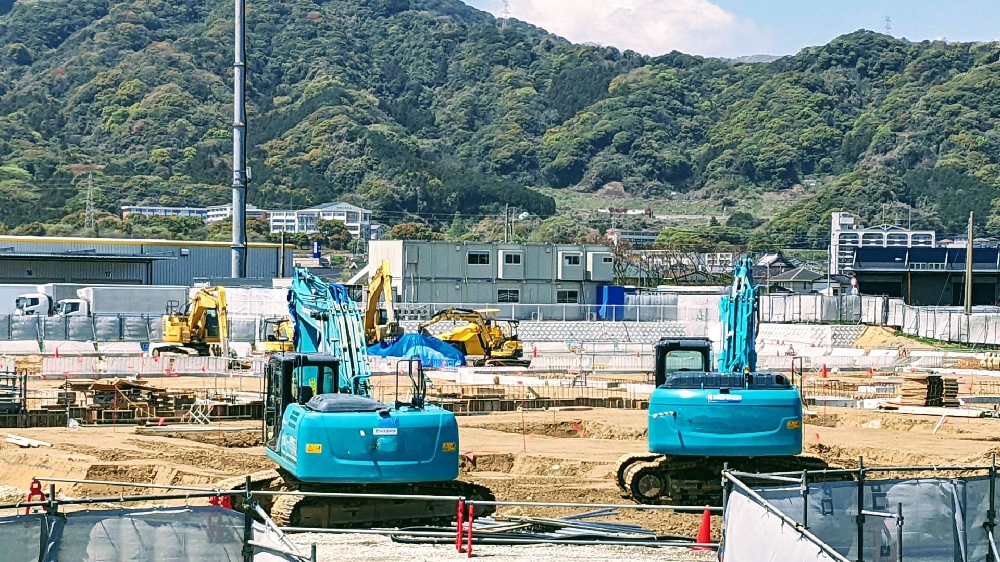
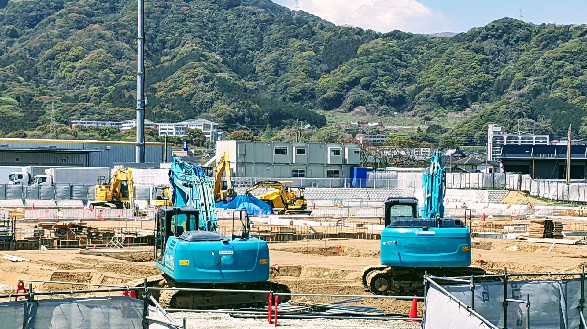

GeoWeb地盤調査
 

すべての現場に、かんたんを。
地盤調査データの収集から解析、レポート作成まで。スマートな地盤調査をGeoWebで。
GeoWeb地盤調査とは
調査データをWeb上でリアルタイム共有し、ヒューマンエラーや不正を防止、業務効率化を実現する——それがジオサイン株式会社の主力製品「GeoWeb System 地盤調査版」です。
FeatureGeoWeb地盤調査の特長
01
地盤調査データを可視化
地盤調査の実施状況をデータと写真で記録し、インターネット管理によって「見える化」します。
02
強力な暗号化・クラウド化により不正・改ざんを抑止
現場情報をリアルタイムに把握し、データの暗号化とクラウド化で不正・改ざんを防ぎます。
03
現場とオフィスでデータを即時共有し、生産性を向上
自動地盤調査データを専用Webアプリで即時共有し、調査から報告までの業務効率と生産性を大幅に向上させます。
FunctionGeoWeb地盤調査の機能
断面図表示機能
GeoWeb mobileでは、25cm丸めのデータと断面図を表示でき、自沈層・回転層を一目で把握。誤認や再調査を防ぎ、現地でのデータ確認も可能です。
写真撮影名称付きフレーム機能
GPS連動で撮影を行い、写真の原本性を確保し使い回しを防止。報告書順の撮影ガイドで撮り忘れも防ぎます。
チェックリスト機能
現地踏査時にチェックリストを入力可能。物件ごとに自動切替され、紙のチェックリストからの転記作業をなくし報告書作成ミスを防ぎます。
推奨端末
機種名：DuraForce EX
推奨Androidバージョン：8～13
※iOSは非対応です
※その他端末でも動作しますが一部動作しない場合がございます。 不安な方はお問合せフォームからご連絡ください。